1. Spájané štruktúry¶
Doteraz sme pracovali s „predpripravenými“ dátovými štruktúrami jazyka Python (zjednodušene hovoríme, že štruktúra je typ, ktorý môže obsahovať viac prvkov), napríklad
list- zoznam (postupnosť) hodnôt, ktoré sú očíslované indexmi od 0 do počet prvkov-1dict- slovník (asociatívne pole), kde každému prvku zodpovedá kľúčset- množina rôznych hodnôt
Okrem toho už viete konštruovať vlastné dátové typy pomocou definovania tried. Inštancie tried obsahujú atribúty, ktoré sú buď stavovými premennými alebo metódami (napríklad Stack alebo Queue). Takto vieme vytvárať vlastné typy, pričom využívame štruktúry Pythonu.
Referencie
Už vieme, že premenné v Pythone (aj atribúty objektov) sú vlastne pomenované referencie na nejaké hodnoty, napríklad čísla, reťazce, zoznamy, funkcie, atď. Referencie (kreslili sme ich šípkou) sú niečo ako adresou do pamäte, kde sa príslušná hodnota nachádza. Takýmito referenciami sú aj prvky iných štruktúrovaných typov, napríklad
zoznam čísel
[1, 2, 5, 2]je v skutočnosti štvorprvkový zoznam referencií na hodnoty1,2,5(posledný prvok obsahuje rovnakú referenciu ako druhý prvok zoznamu);slovník (asociatívne pole) uchováva dvojice (kľúč, hodnota) a každá z nich je opäť referenciou na príslušné hodnoty;
množina hodnôt sa tiež uchováva ako množina referencií na hodnoty
atribúty tried, ktoré sú stavové premenné obsahujú tiež „iba“ referencie na hodnoty.
Naučíme sa využívať referencie (adresy rôznych hodnôt, teda adresy objektov) na vytváranie spájaných štruktúr.
Spájaný zoznam¶
Jednosmerný spájaný zoznam (singly linked list) je najjednoduchšia spájaná štruktúra, v ktorej každý prvok obsahuje referenciu (adresu, niekedy hovoríme aj link, smerník, pointer) na nasledovný prvok štruktúry. Prvkom štruktúry hovoríme Vrchol (alebo niekedy po anglicky Node). Spájané štruktúry budú vždy prístupné pomocou premennej, ktorá odkazuje (obsahuje referenciu) na prvý prvok (vrchol) zoznamu. Spájaný zoznam reprezentuje postupnosť nejakých hodnôt a v tejto postupnosti je jeden vrchol posledný, za ktorým už nie je ďalší nasledovný prvok. Tento jeden vrchol si teda namiesto nasledovníka bude pamätať informáciu, že nasledovník už nie je - najčastejšie na to využijeme hodnotu None.
Takúto štruktúru budeme kresliť takto:
jedna premenná odkazuje (obsahuje referenciu) na prvý prvok (vrchol) zoznamu
každý vrchol nakreslíme ako obdĺžnik s dvomi priečinkami: časť s údajom (pomenujeme to ako
data) a časť s referenciou na nasledovníka (pomenujeme akonext)referencie budeme kresliť šípkami, pričom neexistujúcu referenciu (pre nasledovníka posledného vrcholu), t.j. hodnotu
Nonemôžeme značiť prečiarknutím políčkanext, napríklad takto:
{kind=link}
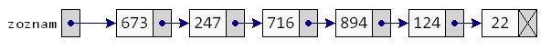
Reprezentácia vrcholu¶
Vrchol budeme definovať ako objekt s dvoma premennými data a next:
class Vrchol:
def __init__(self, data, next=None):
self.data = data
self.next = next
Pozrite, čo sa definuje týmto zápisom:
>>> v1 = Vrchol(11)
Vytvorili sme jeden vrchol, resp. jednovrcholový spájaný zoznam. Jeho nasledovníkom je None. Na tento vrchol odkazuje premenná v1. Jedine, čo zatiaľ môžeme s takýmto vrcholom robiť je to, že si vypíšeme jeho atribúty:
>>> print(v1.data)
11
>>> print(v1.next)
None
Podobne zapíšeme:
>>> v2 = Vrchol(22)
>>> v3 = Vrchol(33)
Teraz máme vytvorené 3 izolované vrcholy, ktoré sú prístupné pomocou troch premenných v1, v2 a v3. Tieto tri vrcholy sa nachádzajú v rôznych častiach pamäti a nie sú nijako prepojené.
{kind=link}
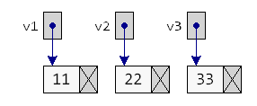
Vytvorme prvé prepojenie: ako nasledovníka v1 nastavíme vrchol v2:
>>> v1.next = v2
>>> print(v1.next)
<__main__.Vrchol object at 0x01FAF0D0>
Vidíme, že nasledovníkom v1 už nie je None, ale nejaký objekt typu Vrchol - zrejme je to vrchol v2.
{kind=link}
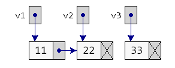
Môžeme sa pozrieť na údaj nasledovníka v1:
>>> print(v1.next.data)
22
>>> print(v1.next.next)
None
Keďže jeho nasledovníkom je None, znamená to, že nasledovníka nemá. Premenná v1 obsahuje referenciu na vrchol, ktorý má jedného nasledovníka, t.j. v1 odkazuje na dvojprvkový spájaný zoznam. Pripojme teraz do tejto postupnosti aj vrchol v3:
>>> v2.next = v3
Takže prvým vrcholom v spájanom zozname je v1 s hodnotou 11, jeho nasledovníkom je v2 s hodnotou 22 a nasledovníkom v2 je v3 s hodnotou 33. Nasledovníkom tretieho vrcholu je stále None, teda tento vrchol nemá nasledovníka.
{kind=link}
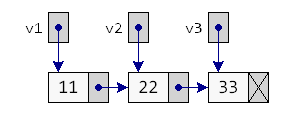
Vytvorili sme trojprvkový spájaný zoznam, ktorého vrcholy majú postupne tieto hodnoty:
>>> print(v1.data)
11
>>> print(v1.next.data)
22
>>> print(v1.next.next.data)
33
Vidíte, že pomocou referencie na prvý vrchol sa vieme dostať ku každému vrcholu, len treba dostatočný počet krát zapísať next. Premenné v2 a v3 teraz už nepotrebujeme a mohli by sme ich hoci aj zrušiť - na vytvorený zoznam to už nemá žiaden vplyv:
>>> del v2, v3
Teraz to v pamäti vyzerá takto:
{kind=link}
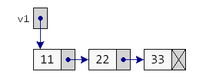
Webová stránka pythontutor.com¶
Zo zimného semestra poznáme http://pythontutor.com/visualize.html - veľmi užitočný nástroj na vizualizáciu pythonovských programov. Vieme, že sem môžeme preniesť skoro ľubovoľný algoritmus, ktorý sme robili doteraz (okrem grafiky) a odkrokovať ho. Môžeme sem preniesť, napríklad tento program:
class Vrchol:
def __init__(self, data, next=None):
self.data, self.next = data, next
v1 = Vrchol(11)
v2 = Vrchol(22)
v3 = Vrchol(33)
v1.next = v2
v2.next = v3
del v2,v3
Po spustení vizualizácie môžeme vidieť, že globálna premenná v1 obsahuje referenciu na inštanciu triedy Vrchol, v ktorej atribút data má hodnotu 11 a atribút next je opäť referenciou na ďalšiu inštanciu triedy Vrchol, atď.
Tiež tu môžeme vidieť, že globálna premenná Vrchol obsahuje referenciu na definíciu triedy Vrchol:
{kind=link}
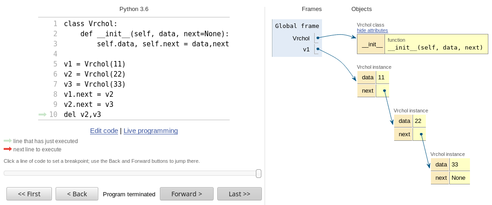
Spájané vytváranie vrcholov¶
Pozrite tento zápis:
>>> a = Vrchol('a')
>>> b = Vrchol('b')
{kind=link}
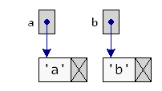
>>> a.next = b
{kind=link}
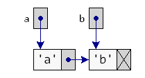
>>> del b
{kind=link}
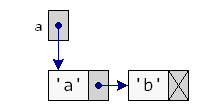
Vytvorí dvojprvkový zoznam, pričom premenná b je len pomocná a hneď po priradení do a.next sa aj zruší. To isté môžeme zapísať aj bez nej:
>>> a = Vrchol('a')
>>> a.next = Vrchol('b')
Tu si všimnite, že inicializačná metóda (Vrchol.__init__()) má druhý parameter, ktorým môžeme definovať hodnotu next už pri vytváraní vrcholu. Preto môžeme tieto dve priradenia zlúčiť do jedného:
>>> a = Vrchol('a', Vrchol('b'))
Hoci teraz je tu malý rozdiel a to v tom, že vrchol Vrchol('b') sa vytvorí skôr ako Vrchol('a'), čo ale vo väčšine prípadov nevadí. Podobne by sme vedeli jedným priradením vytvoriť nielen dvojprvkový, ale aj viacprvkový zoznam, napríklad:
>>> zoznam = Vrchol('P', Vrchol('y', Vrchol('t', Vrchol('h', Vrchol('o', Vrchol('n'))))))
Vytvorí šesťprvkový zoznam, pričom každý prvok obsahuje jedno písmeno z reťazca 'Python':
{kind=link}
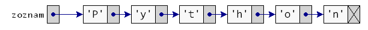
Výpis pomocou cyklu¶
Predpokladajte, že máme vytvorený nejaký, napríklad štvorprvkový zoznam:
>>> v1 = Vrchol(11, Vrchol(22, Vrchol(33, Vrchol(44))))
V pamäti by sme ho mohli vidieť nejako takto:
{kind=link}
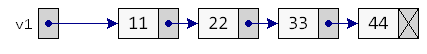
Teraz treba vypísať všetky jeho hodnoty postupne od prvej po poslednú, môžeme to urobiť, napríklad takto:
>>> print(v1.data)
11
>>> print(v1.next.data)
22
>>> print(v1.next.next.data)
33
>>> print(v1.next.next.next.data)
44
alebo v jednom riadku:
>>> print(v1.data, v1.next.data, v1.next.next.data, v1.next.next.next.data)
11 22 33 44
Zrejme pre zoznam ľubovoľnej dĺžky budeme musieť použiť nejaký cyklus, asi najvhodnejší bude while-cyklus. Keď vypíšeme prvú hodnotu, posunieme premennú v1 na nasledovníka prvého vrcholu:
>>> print(v1.data)
>>> v1 = v1.next
a môže sa to celé opakovať. Zápis v1 = v1.next je veľmi dôležitý a budeme ho v súvislosti so spájanými zoznamami používať veľmi často. Označuje, že do premennej v1 sa namiesto referencie na nejaký vrchol dostáva referencia na jeho nasledovníka:
{kind=link}
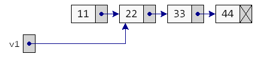
postupne dostávame:
{kind=link}
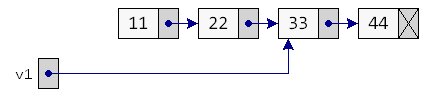
{kind=link}
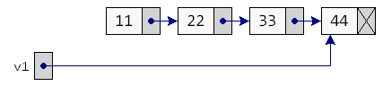
Ak už tento vrchol nasledovníka nemá, do v1 sa dostane hodnota None:
{kind=link}
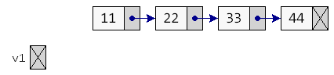
Preto kompletný výpis hodnôt zoznamu môžeme zapísať takto:
while v1 is not None:
print(v1.data, end=' -> ')
v1 = v1.next
print(None)
Pre názornosť sme tam medzi každé dve vypisované hodnoty pridali reťazec ' -> ':
11 -> 22 -> 33 -> 44 -> None
Hoci to vyzerá dobre a dostatočne jednoducho, má to jeden problém: po skončení vypisovania pomocou tohto while-cyklu je v premennej v1 hodnota None:
>>> print(v1)
None
Teda výpisom sme si zničili jedinú referenciu na prvý vrchol zoznamu a teda Python pochopil, že so zoznamom už pracovať ďalej nechceme a celú štruktúru z pamäti vyhodil (hovorí sa tomu garbage collection). Môžeme to skontrolovať aj vo vizualizácii http://pythontutor.com/visualize.html. Tento príklad ukazuje to, že niekedy si bude potrebné uchovať referenciu na začiatok zoznamu, alebo sa v takomto cykle nebude pracovať priamo s premennou v1, ale s jej kópiou, napríklad takto:
pom = v1
while pom is not None:
print(pom.data, end=' -> ')
pom = pom.next
print(None)
Po skončení tohto výpisu sa premenná pom vynuluje na None, ale začiatok zoznamu v1 ostáva neporušený. Teraz je to už správne a v pamäti to postupne vyzerá takto:
{kind=link}
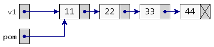
{kind=link}
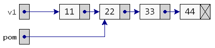
{kind=link}
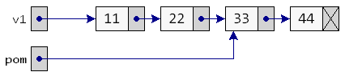
{kind=link}
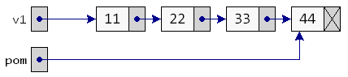
{kind=link}
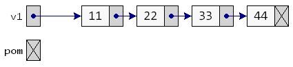
Takýto výpis sa dá zapísať aj do funkcie, pričom tu pomocnú referenciu na začiatok zoznamu zastúpi parameter:
def vypis(zoznam):
while zoznam is not None:
print(repr(zoznam.data), end=' -> ')
zoznam = zoznam.next
print(None)
Pri volaní funkcie sa do formálneho parametra zoznam priradí hodnota skutočného parametra (napríklad obsah premennej v1) a teda referencia na začiatok zoznamu sa týmto volaním nepokazí.
Teraz môžeme volať funkciu na výpis nielen so začiatkom zoznamu ale hoci, napríklad aj od druhého vrcholu:
>>> vypis(v1)
11 -> 22 -> 33 -> 44 -> None
>>> vypis(v1.next)
22 -> 33 -> 44 -> None
Vidíte, že referencia na prvý vrchol v spájanom zozname má špeciálny význam a preto sa zvykne označovať nejakým dohodnutým menom, napríklad zoznam, zoz, zac, z (ako začiatok zoznamu) alebo niekedy aj po anglicky head (hlavička zoznamu).
Vytvorenie zoznamu pomocou cyklu¶
Zoznamy sme doteraz vytvárali sériou priradení a to bez cyklov. Častejšie sa ale budú vytvárať (možno aj dosť dlhé) zoznamy pomocou opakujúcich sa programových konštrukcií. Začneme vytváraním zoznamu pridávaním nového vrcholu na začiatok doterajšieho zoznamu, keďže toto je výrazne jednoduchšie.
Vytvoríme desaťprvkový zoznam s hodnotami 0, 1, 2, … 9. Začneme s prázdnym zoznamom:
>>> zoz = None
{kind=link}
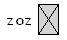
Vytvoríme prvý vrchol s hodnotou 0:
>>> pom = Vrchol(0)
{kind=link}
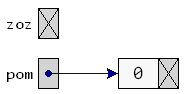
a dáme ho na začiatok:
>>> zoz = pom
{kind=link}
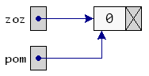
Keby sme to teraz vypísali pomocou funkcie vypis(zoz), dostali by sme: 0 -> None
Vytvoríme druhý vrchol:
>>> pom = Vrchol(1)
{kind=link}
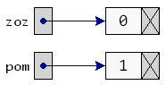
a dáme ho pred doterajší začiatok:
>>> pom.next = zoz
{kind=link}
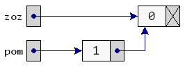
tento nový vrchol je teraz novým začiatkom zoznamu:
>>> zoz = pom
{kind=link}
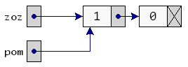
Po výpise by sme dostali: 1 -> 0 -> None
Toto môžeme opakovať viackrát pre rôzne hodnoty - zakaždým sa na začiatok doterajšieho zoznamu pridá nový vrchol:
>>> pom = Vrchol(2)
>>> pom.next = zoz
>>> zoz = pom
{kind=link}
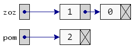
{kind=link}
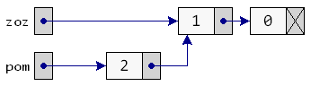
{kind=link}
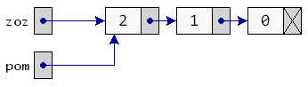
>>> pom = Vrchol(3)
>>> pom.next = zoz
>>> zoz = pom
{kind=link}
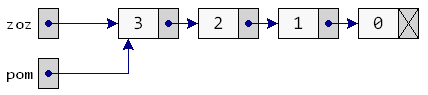
Takto by sme mohli pokračovať až do 9. Teraz už vidíte, čo sa tu opakuje a čo treba dať do cyklu:
zoz = None # zatiaľ je to ešte prázdny zoznam
for hodnota in range(10):
pom = Vrchol(hodnota)
pom.next = zoz
zoz = pom
Týmto postupom sme dostali 10 prvkový zoznam hodnôt v poradí od 9 do 0
{kind=link}
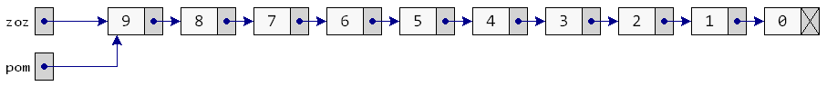
>>> vypis(zoz)
9 -> 8 -> 7 -> 6 -> 5 -> 4 -> 3 -> 2 -> 1 -> 0 -> None
Opäť si všimnime zápis tela cyklu:
pom = Vrchol(hodnota)
pom.next = zoz
zoz = pom
Vytvorí sa tu nový vrchol najprv s danou hodnotou a nasledovníkom None. Potom sa tento nasledovník zmení na pom.next = zoz a na záver sa tento nový vrchol pom stáva novým začiatkom zoznamu, t.j. zoz = pom. Toto isté sa dá zapísať kompaktnejšie:
zoz = None
for hodnota in range(10):
zoz = Vrchol(hodnota, zoz)
Takto by sme vedeli vytvoriť ľubovoľné zoznamy. Zapíšme tento algoritmus do funkcie:
def vyrob(postupnost):
zoz = None
for hodnota in postupnost:
zoz = Vrchol(hodnota, zoz)
return zoz
Otestujme, napríklad:
>>> zoz1 = vyrob(range(1000))
>>> vypis(zoz1)
999 -> 998 -> ... -> 1 -> 0 -> None
>>> zoz2 = vyrob('Python')
>>> vypis(zoz2)
'n' -> 'o' -> 'h' -> 't' -> 'y' -> 'P' -> None
Vytvorili sa dva zoznamy: prvý s 1000 vrcholmi a druhý so šiestimi vrcholmi s písmenami reťazca 'Python'. Treba si pri tomto uvedomiť, že takto sa vytvárajú zoznamy s hodnotami v opačnom poradí, ako so do neho vkladali.
Častejšie budeme potrebovať vyrábať zoznamy, v ktorých budú prvky v tom poradí, v akom sme ich vkladali. Jednoduchým riešením môže byť prevrátenie vstupnej postupnosti pomocou reversed():
def vyrob1(postupnost):
zoz = None
for hodnota in reversed(postupnost):
zoz = Vrchol(hodnota, zoz)
return zoz
Otestujeme:
>>> zoz2 = vyrob1('Python')
>>> vypis(zoz2)
'P' -> 'y' -> 't' -> 'h' -> 'o' -> 'n' -> None
Uvedomte si, že nie vždy môžeme takto jednoducho otočiť vstupnú postupnosť, z ktorej sa má vytvoriť spájaný zoznam. Napríklad, ak sú vstupnou postupnosťou riadky otvoreného textového súboru, tak takúto postupnosť takto jednoducho neotočíme.
Zistenie počtu prvkov¶
Zapíšeme funkciu, ktorá spočíta počet prvkov zoznamu. Bude pracovať na rovnakom princípe ako funkcia vypis() len namiesto samotného vypisovania hodnoty funkcia zvýši počítadlo o 1:
def pocet(zoznam):
vysl = 0
while zoznam is not None:
vysl += 1
zoznam = zoznam.next
return vysl
Otestujeme, napríklad:
>>> zoz = vyrob('Python')
>>> pocet(zoz)
6
Malou úpravou túto funkciu vylepšíme:
def pocet(zoznam, hodnota=None):
vysl = 0
while zoznam is not None:
if hodnota is None or zoznam.data == hodnota:
vysl += 1
zoznam = zoznam.next
return vysl
Táto funkcia dokáže nielen zistiť počet prvkov zoznamu, ale aj počet výskytov nejakej konkrétnej hodnoty. Napríklad:
>>> zoz1 = vyrob('programujem v pythone')
>>> pocet(zoz1)
21
>>> pocet(zoz1, 'p')
2
Na prednáške 19. Úvod do analýzy algoritmov sme sa zoznámili s tým, ako môžeme ohodnotiť niektoré funkcie z pohľadu efektívnosti, teda, či pri väčších dátach pôjdu výrazne pomalšie ako iné algoritmy. Označenie O(1) znamená, že funkcia bude bežať rovnako dlho pre veľké dáta ako pre malé - hovoríme tomu konštantná zložitosť. Označenie O(n) znamená, že čas behu programu lineárne závisí od veľkosti dát, teda ak zdvojnásobíme veľkosť dát, tak sa zdvojnásobí aj čas trvania algoritmu.
Naša funkcia pocet zrejme závisí od veľkosti dát, teda od dĺžky spájaného zoznamu a keďže je táto závislosť lineárna, označíme jej zložitosť ako O(n), kde n je veľkosť dát (dĺžka zoznamu).
Hľadanie vrcholu¶
Podobný cyklus, ako sme použili pri výpise a pri zisťovaní počtu prvkov, môžeme použiť pri zisťovaní, či sa daná hodnota nachádza v zozname. Napíšme funkciu, ktorá vráti True, ak nájde konkrétnu hodnotu, inak vráti False:
def zisti(zoznam, hodnota):
while zoznam is not None:
if zoznam.data == hodnota:
return True
zoznam = zoznam.next
return False
Otestujeme:
>>> zoznam = vyrob('Python')
>>> zisti(zoznam, 'h')
True
>>> zisti(zoznam, 'g')
False
Táto funkcia skončila prechádzanie prvkov zoznamu už pri prvom výskyte hľadanej hodnoty, napriek tomu je zložitosť tejto funkcie O(n).
Zmena hodnoty vo vrchole¶
Najprv vytvorme jednoduchú funkciu, ktorá zmení všetky hodnoty v zozname:
def zmen(zoznam, hodnota):
while zoznam is not None:
zoznam.data = hodnota
zoznam = zoznam.next
>>> zoznam = vyrob('Python')
>>> zmen(zoznam, 0)
>>> vypis(zoznam)
0 -> 0 -> 0 -> 0 -> 0 -> 0 -> None
Ak chceme zmeniť len vrcholy, ktoré obsahujú nejakú konkrétnu hodnotu, môžeme to zapísať takto:
def zmen(zoznam, hodnota, na_hodnotu):
while zoznam is not None:
if zoznam.data == hodnota:
zoznam.data = na_hodnotu
# return
zoznam = zoznam.next
Príkaz return v tele cyklu spôsobí ukončenie funkcie už po prvom výskyte hľadanej hodnoty. Inak sa zmenia obsahy všetkých vrcholov s danou hodnotou.
Otestujeme so zakomentovaným return:
>>> zoz = vyrob((1, 2, 3) * 3)
>>> zmen(zoz, 2, 'xy')
>>> vypis(zoz)
1 -> 'xy' -> 3 -> 1 -> 'xy' -> 3 -> 1 -> 'xy' -> 3 -> None
Vloženie vrcholu na koniec zoznamu¶
Chceme vyrobiť novú operáciu, ktorá na koniec zoznamu vloží nový vrchol s danou hodnotou. Už vieme, že pridávanie vrcholu na začiatok je takto jednoduché:
zoz = ... # zoz je referencia na začiatok zoznamu
zoz = Vrchol(hodnota, zoz)
S pridávaním na koniec to bude zložitejšie: najprv nájdeme posledný vrchol zoznamu a až tomuto vrcholu zmeníme jeho atribút next, t.j. až na záver urobíme:
posledny.next = Vrchol(hodnota)
Hľadanie posledného vrcholu sa bude podobať na postupné prechádzanie všetkých vrcholov:
posledny = zoz # posledny je pomocná referencia
while posledny is not None:
posledny = posledny.next
Lenže toto nebude fungovať - po skončení while-cyklu nebude v premennej posledny referencia na posledný vrchol ale bude tam None. Treba to zapísať trochu zložitejšie - while neskončí až vtedy, keď v posledny bude None, ale keď jeho next bude None:
posledny = zoz
while posledny.next is not None:
posledny = posledny.next
Teraz je to už naozaj dobre, ale toto bude fungovať len pre neprázdny zoznam. Pre prázdny zoznam hodnota premennej posledny bude None a preto posledny.next spadne na chybe. Tento špeciálny prípad musíme vyriešiť ešte pred cyklom. Teraz môžeme zapísať kompletnú funkciu, ktorá pridá na koniec zoznamu nový vrchol. Táto funkcia bude vracať ako svoj výsledok začiatok takto vytvoreného zoznamu:
def pridaj_koniec(zoz, hodnota):
if zoz is None:
return Vrchol(hodnota)
posledny = zoz
while posledny.next is not None:
posledny = posledny.next
posledny.next = Vrchol(hodnota)
return zoz
Keďže funkcia obsahuje while-cyklus a tento závisí od dĺžky zoznamu, zložitosť tejto funkcie je O(n), teda pre veľmi dlhé zoznamy (napríklad milión prvkov) už budeme cítiť čas behu (možno jednu sekundu).
Môžeme otestovať:
zoznam = None
for i in 'Python':
zoznam = pridaj_koniec(zoznam, i)
vypis(zoznam)
Mali by sme dostať zoznam so 6 písmenami v správnom poradí. Zapamätajte si:
Vloženie nového vrcholu do zoznamu¶
Nový vrchol môžeme vložiť buď pred nejaký existujúci alebo za. Jednoduchšie to bude s vkladaním za nejaký existujúci. Zapíšme:
def pridaj_za(zoznam, za_hodnotu, hodnota):
while zoznam is not None and zoznam.data != za_hodnotu:
zoznam = zoznam.next
if zoznam is not None:
zoznam.next = Vrchol(hodnota, zoznam.next)
To isté môžeme zapísať aj takto:
def pridaj_za(zoznam, za_hodnotu, hodnota):
while zoznam is not None:
if zoznam.data == za_hodnotu:
zoznam.next = Vrchol(hodnota, zoznam.next)
return
zoznam = zoznam.next
Vkladanie pred vrchol bude trochu náročnejšie a bude sa trochu podobať hľadaniu posledného vrcholu v zozname:
def pridaj_pred(zoznam, pred_hodnotu, hodnota):
if zoznam is None:
return None # nie je čo robiť
if zoznam.data == pred_hodnotu:
return Vrchol(hodnota, zoznam) # pred prvý
pom = zoznam
while pom.next is not None:
if pom.next.data == pred_hodnotu:
pom.next = Vrchol(hodnota, pom.next)
break
pom = pom.next
return zoznam
Keďže v tomto prípade sa môže zmeniť začiatok zoznamu, táto funkcia vždy vráti začiatok takéhoto zoznamu.
Na tomto príklade sa dá ukázať ešte jedno programátorské vylepšenie prechádzania spájaného zoznamu. Okrem pomocnej referencie pom budeme mať ešte jednu referenciu pred na predchodcu pom:
def pridaj_pred(zoznam, pred_hodnotu, hodnota):
if zoznam is None:
return None # nie je čo robiť
pred, pom = None, zoznam
while pom is not None and pom.data != pred_hodnotu:
pred, pom = pom, pom.next
if pred is None:
zoznam = Vrchol(hodnota, zoznam) # pred prvý
elif pom is not None:
pred.next = Vrchol(hodnota, pred.next)
return zoznam
Všimnite si, že vo while-cykle sa paralelne menia obe referencie: pom na svojho nasledovníka a pred na predchodcu pom. Keď while-cyklus skončí a v pred je None, znamená to, že budeme pracovať s vrcholom, ktorý nemá predchodcu, čo je prvý vrchol v zozname (máme vložiť pred prvý). Ak po skončení while-cyklu je v pom hodnota None, znamená to, že sme prešli celý spájaný zoznam a nenašli sme vrchol, ktorého hodnota je v parametri pred_hodnotu.
Aj tieto funkcie majú zložitosť O(n), nakoľko čas ich behu (lineárne) závisí od dĺžky zoznamu (hoci pre špecálne prípady, napríklad vkladanie pred/za prvý prvok zoznamu, má zložitosť O(1)).
Cvičenie¶
Poznámka
riešenia úloh ulož do jedného súboru a odovzdaj na úlohový server https://vektor.fmph.uniba.sk/
testovací server tieto ulohy nebude testovať, vyrieš a odovzdaj ich aspoň 10 okrem tých, ktoré sú označené znakom -
prvé tri riadky súboru s riešením musia obsahovať:
# 1. cvicenie # student: Janko Hrasko # datum: 17.2.2026
zrejme ako študenta uvedieš svoje meno.
v odovzdaných riešeniach nepoužívaj
globalani pomocné lokálne premenné typulist(okrem (8) úlohy)
- Bez spúšťania na počítači zisti, čo urobia nasledovné programy. Predpokladaj tieto deklarácie a funkcie:
class Vrchol: def __init__(self, data, next=None): self.data, self.next = data, next def vypis(zoznam): while zoznam is not None: print(repr(zoznam.data), end=' -> ') zoznam = zoznam.next print(None) def vyrob(postupnost): zoz = None for hodnota in reversed(postupnost): zoz = Vrchol(hodnota, zoz) return zoz
Prvý spájaný zoznam:
v1 = Vrchol('v') v2 = Vrchol('s') v3 = Vrchol('o') v4 = Vrchol('a') v3.next = v1 v1.next = v2 v2.next = v3 v1.next = v4 zoz = v2 vypis(zoz)
Druhý spájaný zoznam:
v1 = None v2 = Vrchol('S', v1) v2 = Vrchol('U', v2) v3 = Vrchol('I', v1) v3 = Vrchol('V', v3) v2 = Vrchol('R', v2) v3.next.next = v2 vypis(v3)
Potom to skontroluj v Pythone.
Riešenie
pre prvý spájaný zoznam:
's' -> 'o' -> 'v' -> 'a' -> None
pre druhý spájaný zoznam:
'V' -> 'I' -> 'R' -> 'U' -> 'S' -> None
- Skonštruuj zoznam tak, aby si dostal požadovaný výstup. Najprv bez funkcie
vyroba potom pomocou nej:>>> z = ... >>> vypis(z) 3.14 -> '6.28' -> 9.42 -> None -> 15.7 -> None
Riešenie
z = Vrchol(3.14, Vrchol('6.28', Vrchol(9.42, Vrchol(None, Vrchol(15.7))))) vypis(z) z = vyrob((3.14, '6.28', 9.42, None, 15.7)) vypis(z)
- Máme daný štvorprvkový zoznam (pri jeho vytváraní využi
range). Oprav v ňom druhý prvok:>>> zoz = vyrob(...) >>> vypis(zoz) 4 -> 11 -> 18 -> 25 -> None >>> ... oprav len 2. prvok >>> vypis(zoz) 4 -> (10, 12) -> 18 -> 25 -> None
Riešenie
>>> zoz = vyrob(range(4, 32, 7)) >>> vypis(zoz) 4 -> 11 -> 18 -> 25 -> None >>> zoz.next.data = (10, 12) >>> vypis(zoz) 4 -> (10, 12) -> 18 -> 25 -> None
- Máme daný spájaný zoznam, ktorý vznikol z vety
'strc prst skrz krk'a pomocou metódysplit. Vlož za druhý prvok nový vrchol:>>> zoz = ... >>> vypis(zoz) 'strc' -> 'prst' -> 'skrz' -> 'krk' -> None >>> ... vlož nový vrchol za druhý prvok >>> vypis(zoz) 'strc' -> 'prst' -> {1: 2} -> 'skrz' -> 'krk' -> None
Zapíš to tak, aby vkladanie za druhý prvok fungovalo aj pre ľubovoľný iný aspoň dvojprvkový zoznam.
Riešenie
>>> zoz = vyrob('strc prst skrz krk'.split()) >>> vypis(zoz) 'strc' -> 'prst' -> 'skrz' -> 'krk' -> None >>> zoz.next.next = Vrchol({1: 2}, zoz.next.next) >>> vypis(zoz) 'strc' -> 'prst' -> {1: 2} -> 'skrz' -> 'krk' -> None
Napíš funkciu
zmen_parne(zoznam, hodnota=0), ktorá v danom zozname zmení hodnoty len vo vrcholoch s párnou celočíselnou hodnotou na zadanú hodnotu. Funkcia nič nevracia. Napríklad:>>> zoz = ... >>> vypis(zoz) 5 -> 0 -> 2.12 -> '2' -> 18 -> 4.0 -> 4 -> None >>> zmen_parne(zoz, 42) >>> vypis(zoz) 5 -> 42 -> 2.12 -> '2' -> 42 -> 4.0 -> 42 -> None >>> zmen_parne(zoz.next.next) >>> vypis(zoz) 5 -> 42 -> 2.12 -> '2' -> 0 -> 4.0 -> 0 -> None
Riešenie
def zmen_parne(zoznam, hodnota=0): while zoznam is not None: if isinstance(zoznam.data, int) and zoznam.data % 2 == 0: zoznam.data = hodnota zoznam = zoznam.next
Napíš funkciu
pocty(zoznam, hodnota=0), ktorá vráti dvojicu čísel: počet vrcholov, ktoré sú väčšie ako zadanáhodnotaa počet vrcholov, ktoré sú menšie akohodnota. Napríklad:>>> zoz = ... >>> vypis(zoz) 'prvy' -> -7 -> 0.0 -> 2 -> 'druhy' -> -3.14 -> [3] -> None >>> pocty(zoz) (1, 2) >>> pocty(zoz, 'python') (0, 2)
Riešenie
def pocty(zoznam, hodnota=0): p1 = p2 = 0 while zoznam is not None: try: if zoznam.data > hodnota: p1 += 1 if zoznam.data < hodnota: p2 += 1 except TypeError: pass zoznam = zoznam.next return p1, p2
- Napíš funkciu
zdvoj(zoznam), ktorá každý prvok zoznamu zdvojnásobí. Toto urobí len vtedy, ak sa to dá (nevznikne chyba), inak tento prvok nezmení a pokračuje na ďalších. Funkcia nič nevracia. Napríklad:>>> zoz = ... >>> vypis(zoz) 3.14 -> '6.28' -> {1, 2} -> (9, 42) -> None -> [15.7] -> None >>> zdvoj(zoz) >>> vypis(zoz) 6.28 -> '6.286.28' -> {1, 2} -> (9, 42, 9, 42) -> None -> [15.7, 15.7] -> None
Riešenie
def zdvoj(zoznam): while zoznam is not None: try: zoznam.data *= 2 except TypeError: pass zoznam = zoznam.next
Napíš funkciu
to_str(zoznam), ktorá z daného spájaného zoznamu vráti reťazec. Tento reťazec bude rovnaký, ako by vypísala funkciavýpis. Funkcia najprv z jednotlivých prvkov spájaného zoznamu vytvorí pythonovský zoznam (list) reťazcov a až na záver z neho pomocou' -> '.join(...)vyrobí výsledný reťazec. Otestuj tento nový výpis aj pre dlhý zoznam:>>> vypis(vyrob(range(1000))) ... >>> print(to_str(vyrob(range(1000)))) ...
Malo by fungovať aj:
>>> print(to_str(vyrob('Python'))) 'P' -> 'y' -> 't' -> 'h' -> 'o' -> 'n' -> None
Riešenie
def to_str(zoznam): vysl = [] while zoznam is not None: vysl.append(repr(zoznam.data)) zoznam = zoznam.next vysl.append('None') return ' -> '.join(vysl)
- Bez spúšťania na počítači zisti, čo urobí:
zoz = vyrob((1, 3, 5, 7, 9, 11, 13)) v = zoz.next.next v1 = v.next.next v.next.next = v1.next v1.next = v.next v.next = v1 vypis(zoz)
Riešenie
1 -> 3 -> 5 -> 9 -> 7 -> 11 -> 13 -> None
Päť priradení vymení navzájom štvrtý a piaty prvok.
- Napíš funkciu
vyhod_prvy(zoznam). Funkcia vráti pôvodný zoznam bez prvého prvku. Napríklad:>>> x = vyrob('py') >>> vypis(x) 'p' -> 'y' -> None >>> x = vyhod_prvy(x) >>> vypis(x) 'y' -> None >>> x = vyhod_prvy(x) >>> vypis(x) None >>> x = vyhod_prvy(x) >>> vypis(x) None
Riešenie
def vyhod_prvy(zoznam): if zoznam is None: return None return zoznam.next
alebo
def vyhod_prvy(zoznam): return None if zoznam is None else zoznam.next
- Napíš funkciu
vyhod_druhy(zoznam), ktorá vyhodí druhý prvok spájaného zoznamu. Funkcia nič nevracia. Napríklad:>>> x = vyrob('pyt') >>> vypis(x) 'p' -> 'y' -> 't' -> None >>> vyhod_druhy(x) >>> vypis(x) 'p' -> 't' -> None >>> vyhod_druhy(x) >>> vypis(x) 'p' -> None >>> vyhod_druhy(x) >>> vypis(x) 'p' -> None
Riešenie
def vyhod_druhy(zoznam): if zoznam is not None and zoznam.next is not None: zoznam.next = zoznam.next.next
- Napíš funkciu
vyhod_za(zoznam, hodnota), ktorá v danom zozname vyhľadá vrchol s danou hodnotouhodnotaa vyhodí za ním nasledujúci vrchol. Ak taký vrchol neexistuje, funkcia nerobí nič. Funkcia nič nevracia. Napríklad:>>> y = ... >>> vypis(y) 3 -> 7 -> 'a' -> 'a' -> 11 -> None >>> vyhod_za(y, 'a') >>> vypis(y) 3 -> 7 -> 'a' -> 11 -> None >>> vyhod_za(y, 11) >>> vypis(y) 3 -> 7 -> 'a' -> 11 -> None
Riešenie
def vyhod_za(zoznam, hodnota): while zoznam is not None: if zoznam.data == hodnota: if zoznam.next is not None: zoznam.next = zoznam.next.next return zoznam = zoznam.next
Napíš funkciu
vyhod_posledny(zoznam). Funkcia vráti pôvodný zoznam bez posledného prvku. Napríklad:>>> x = Vrchol(5, Vrchol(7)) >>> vypis(x) 5 -> 7 -> None >>> x = vyhod_posledny(x) >>> vypis(x) 5 -> None >>> x = vyhod_posledny(x) >>> vypis(x) None >>> x = vyhod_posledny(x) >>> vypis(x) None
Riešenie
def vyhod_posledny(zoznam): # zložitosť O(n) if zoznam is None or zoznam.next is None: return None pom = zoznam while pom.next.next is not None: pom = pom.next pom.next = None return zoznam
Napíš funkciu
vyhod_kazdy_druhy(zoznam), ktorá zo zoznamu vyhodí každý druhý prvok. Funkcia nič nevracia. Napríklad:>>> zoz = vyrob('abcdef') >>> vypis(zoz) 'a' -> 'b' -> 'c' -> 'd' -> 'e' -> 'f' -> None >>> vyhod_kazdy_druhy(zoz) >>> vypis(zoz) 'a' -> 'c' -> 'e' -> None >>> vyhod_kazdy_druhy(zoz) >>> vypis(zoz) 'a' -> 'e' -> None
Riešenie
def vyhod_kazdy_druhy(zoznam): # zložitosť O(n) while zoznam is not None and zoznam.next is not None: zoznam.next = zoznam.next.next zoznam = zoznam.next
Napíš rekurzívnu verziu funkcie
pocet(zoznam), ktorá vráti počet prvkov zoznamu. Funkcia prejde všetky prvky zoznamu bez použitia cyklu len pomocou rekurzie (uvedom si, čo je triviálny prípad rekurzie). Do definície funkcie nepridávaj ďalšie parametre. Napríklad:>>> zoz = vyrob(range(10, 20)) >>> pocet(zoz) 10 >>> pocet(zoz.next) 9 >>> pocet(None) 0
Zrejme táto funkcia spadne pri väčších zoznamoch.
Riešenie
def pocet(zoznam): # zložitosť O(n) if zoznam is None: return 0 return 1 + pocet(zoznam.next)
Napíš rekurzívnu funkciu
sucet(zoznam), ktorá vypočíta súčet prvkov zoznamu (sčituje len číselné hodnoty). Funkcia prejde všetky prvky zoznamu bez použitia cyklu len pomocou rekurzie. Do definície funkcie nepridávaj ďalšie parametre. Napríklad:>>> zoz = ... >>> vypis(zoz) 3.14 -> '6.28' -> -1 -> (9, 42) -> None -> [15.7] -> None >>> sucet(zoz) 2.14 >>> sucet(zoz.next) -1 >>> sucet(None) 0
Riešenie
def sucet(zoznam): # zložitosť O(n) if zoznam is None: return 0 if isinstance(zoznam.data, (int, float)): return zoznam.data + sucet(zoznam.next) return sucet(zoznam.next)
Napíš funkciu
spoj(zoz1, zoz2), ktorá na koniec zoznamuzoz1pripojí zoznamzoz2. Funkcia ako výsledok vráti začiatok takéhoto nového zoznamu. Nepoužívaj žiadne pomocné zoznamy (napríklad typulist). Napríklad:>>> z1 = vyrob('ABC') >>> z2 = vyrob('prst') >>> z = spoj(z1, z2) >>> vypis(z) 'A' -> 'B' -> 'C' -> 'p' -> 'r' -> 's' -> 't' -> None >>> vypis(spoj(None, Vrchol(1234))) 1234 -> None
Riešenie
def spoj(zoz1, zoz2): if zoz1 is None: return zoz2 pom = zoz1 while pom.next is not None: pom = pom.next pom.next = zoz2 return zoz1
Napíš funkciu
prevratena_kopia(zoznam), ktorá vytvorí a vráti z daného zoznamu nový zoznam. Tento bude mať všetky prvky z pôvodného v opačnom poradí. Pôvodný zoznam musí ostať bez zmeny. Nepoužívaj žiadne pomocné zoznamy (typlist). Napríklad:>>> z1 = vyrob('python') >>> vypis(z1) 'p' -> 'y' -> 't' -> 'h' -> 'o' -> 'n' -> None >>> z2 = prevratena_kopia(z1) >>> vypis(z2) 'n' -> 'o' -> 'h' -> 't' -> 'y' -> 'p' -> None >>> vypis(z1) 'p' -> 'y' -> 't' -> 'h' -> 'o' -> 'n' -> None
Riešenie
def prevratena_kopia(zoznam): vysl = None while zoznam is not None: vysl = Vrchol(zoznam.data, vysl) zoznam = zoznam.next return vysl
Napíš funkciu
mapuj(funkcia, zoznam), ktorá pre každý vrchol v danom zozname spustí zadanú funkciu s parametrom hodnota vo vrchole a ak to nespadne na chybe, zmení hodnotu vrcholu. Funkcia nič nevracia. Napríklad:>>> zoz = vyrob((1, -2, 3, -4, 5, -6)) >>> mapuj(abs, zoz) >>> vypis(zoz) 1 -> 2 -> 3 -> 4 -> 5 -> 6 -> None >>> mapuj(lambda x: x**2, zoz) >>> vypis(zoz) 1 -> 4 -> 9 -> 16 -> 25 -> 36 -> None
Riešenie
def mapuj(funkcia, zoznam): while zoznam is not None: try: zoznam.data = funkcia(zoznam.data) except: pass zoznam = zoznam.next
Napíš funkciu
filtruj(podmienka, zoznam), ktorá zo zoznamu vyhodí všetky vrcholy, pre ktoré zavolanie parametrapodmienkas hodnotoudatanevrátiTrue(alebo spadne na chybe). Napríklad:>>> zoz = vyrob(range(5, 12)) >>> vypis(zoz) 5 -> 6 -> 7 -> 8 -> 9 -> 10 -> 11 -> None >>> zoz = filtruj(lambda x: x%3==0, zoz) # číslo je deliteľné 3 >>> vypis(zoz) 6 -> 9 -> None
Riešenie
def filtruj(podmienka, zoznam): while zoznam is not None and not podmienka(zoznam.data): zoznam = zoznam.next if zoznam is None: return None pom = zoznam while pom.next is not None: if podmienka(pom.next.data): pom = pom.next else: pom.next = pom.next.next return zoznam
1. Týždenný projekt¶
Poznámka
riešenie úlohy ulož do textového súboru s príponou
.pya odovzdaj na testovací server https://vektor.fmph.uniba.sk/prvé tri riadky súboru s riešením musia obsahovať:
# 1. tyzdenny projekt # student: Janko Hraško # datum: 22.2.2026
zrejme ako študenta uvedieš svoje meno, dátum uprav podľa dátumu odovzdania
používaj len konštrukcie z doterajších prednášok (nepoužívaj
importaniglobal)
Napíš modul, ktorý bude obsahovať triedu Zoznam s týmito metódami:
class Zoznam:
def __init__(self, zoznam):
...
def pocet_zoznamov(self):
...
@property
def zoznam(self):
...
@property
def prvky(self):
...
def mapuj(self, funkcia):
...
def __getitem__(self, index):
...
def __setitem__(self, hodnota1, hodnota2):
...
Cieľom týchto metód je manipulovať so zadaným pythonovským zoznamom (typ list).
Metódy triedy by mali mať túto funkčnosť (môžeš si dodefinovať aj ďalšie pomocné metódy):
pocet_zoznamov()vráti celkový počet zoznamov a podzoznamov, napríklad:>>> Zoznam([1, 'a', 2]).pocet_zoznamov() 1 >>> Zoznam(['x', [1, [2], 3], 'y', []]).pocet_zoznamov() 4 >>> Zoznam([[[]]]).pocet_zoznamov() 3
pomocou property
zoznammôžeš zistiť aktuálny stav zadaného zoznamu (niektoré metódy ho totiž môžu meniť), napríklad:>>> z = Zoznam([1, 'a', 2]) >>> z.zoznam [1, 'a', 2]
pomocou property
prvkymôžeš zistiť sploštený zoznam prvkov daného zoznamu (v tvare n-tice), teda taký, ktorý už neobsahuje žiadne podzoznamy; metóda vráti hodnotu v tvare tuple, napríklad:>>> Zoznam([1, 'a', 2]).prvky (1, 'a', 2) >>> Zoznam(['x', [1, [2], 3], 'y', []]).prvky ('x', 1, 2, 3, 'y') >>> Zoznam([[[]]]).prvky ()
mapuj(funkcia)všetky prvky zoznamu zmení zadanou funkciou, napríklad:>>> z = Zoznam([1, 'a', 2]) >>> z.mapuj(str) >>> z.zoznam ['1', 'a', '2'] >>> z = Zoznam(['x', [1, [2], 3], 'y', []]) >>> z.mapuj(lambda x: 2 * x) >>> z.zoznam ['xx', [2, [4], 6], 'yy', []]
pomocou metódy
__getitem__(self, index)môžeš indexovať zadaný zoznam: ak je indexom celé číslo, metóda vráti prvok zoznamu s daným indexom, ak je indexom viacprvková n-tica celých čísel, potom pre každé ďalšie číslo v tejto n-tici ďalej indexuje tento prvok (ak je tolist), ak sa takto nedá indexovať, funkcia nespadne, ale vrátiNone, napríklad:>>> z = Zoznam(['x', [1, [2], 3], 'y', []]) >>> z[2] 'y' >>> z[1] [1, [2], 3] >>> z[1, 2] # je to to iste ako z.__getitem__((1, 2)) 3
pomocou metódy
__setitem__(hodnota1, hodnota2)sa nahradia všetky výskytyhodnota1hodnotouhodnota2>>> z = Zoznam([1, 2, 3, [1, 2], 3, [[[1]]], [], 2]) >>> z[1] = 'y' >>> z.zoznam ['y', 2, 3, ['y', 2], 3, [[['y']]], [], 2] >>> z = Zoznam([1, [2, 3], 4, [[2, 3], 2], 3]) >>> z[[2, 3]] = 'a' # je to to iste ako z.__setitem__([2, 3], 'a') >>> z.zoznam [1, 'a', 4, ['a', 2], 3]
Keď budeš spúšťať svoje riešenie na počítači, môžeš na koniec pridať testovacie riadky, ktoré ale testovač vidieť nebude a pritom tebe sa spúšťať budú, napríklad takto:
if __name__ == '__main__':
z = Zoznam([1, 2, 3, [1, 2], 3, [[[1]]], [], 2])
print(f'{z.zoznam = }')
print(f'{z.prvky = }')
print(f'{z.pocet_zoznamov() = }')
print(f'{z[4] = }')
print(f'{z[3, 1] = }')
print(f'{z.mapuj(str) = }')
z['2'] = 2026
print(f'{z.zoznam = }')
Tento test by mal vypísať (možno v inom poradí):
z.zoznam = [1, 2, 3, [1, 2], 3, [[[1]]], [], 2]
z.prvky = (1, 2, 3, 1, 2, 3, 1, 2)
z.pocet_zoznamov() = 6
z[4] = 3
z[3, 1] = 2
z.mapuj(str) = None
z.zoznam = ['1', 2026, '3', ['1', 2026], '3', [[['1']]], [], 2026]